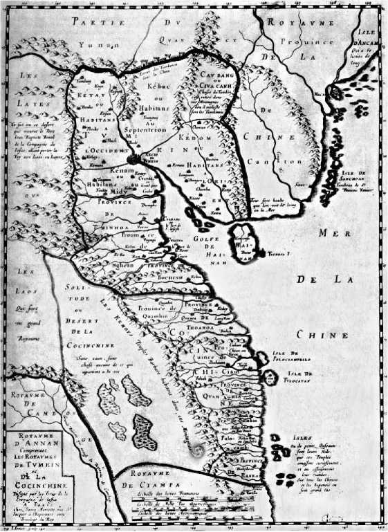
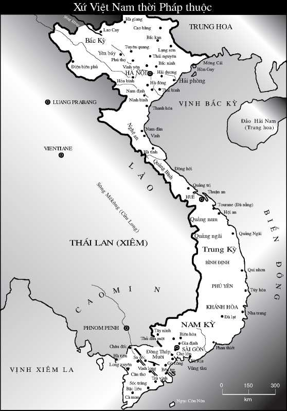

Kể từ 1887 cho đến 1954, xứ Việt Nam là bộ phận xứ Đông Dương thuộc Pháp đô hộ, chia ra làm ba Kỳ:
Bắc Kỳ: Kinh đô Hà Nội
Trung Kỳ, Kinh đô Huế và Nam Kỳ, Kinh đô Sài Gòn
(Nay là Bắc Bộ, Trung Bộ và Nam Bộ).
Dân số năm 1940 độ 20 triệu người: - Bắc 9,4 - Trung 6,4 - Nam 4,8.
Dân cư 9/10 là người Việt (Kinh), ngoài ra còn có những dân tộc ít người mà người ta ít nói đến, họ bị lấn ép vào miền rừng núi. Ở Bắc có dân Tày, Thái, Mường, Máng, Nùng, Mèo (Hmông), Dao..., ở miền Trung có dân Chàm, cùng các dân/tục gọi mọi Giarai, Eđê, Bana, Sođăng, Mnông, Ma, Xtiêng..., ở Nam có người Chàm và Khome, tục gọi người Cao-mên. Dân tộc ít người đông nhất là Hoa kiều gồm người Tàu di cư sang Việt Nam và người Minh Hương. (Người Tàu di cư sang Việt Nam hai lần lớn nhất: Lần thứ nhất triều Mãn Thanh xâm chiếm Nhà Minh, nên gọi là Minh Hương, lần thứ hai Chủ Tịch Mao Trạch Đông nhuộm đỏ lục địa Trung Hoa, chú thích TQP)

Vương Quốc Annam do Giáo Sĩ Alexandre deRhodes họa (1653)

Từ trước đến 1945, các tài liệu thông thường đều dùng hai chữ An Nam đồng như chữ Annamite trong văn kiện Pháp. Thế nên chúng tôi vẫn giữ nguyên văn theo các văn kiện thời ấy, hai chữ Việt Nam trở nên thông thường kể từ 1945.